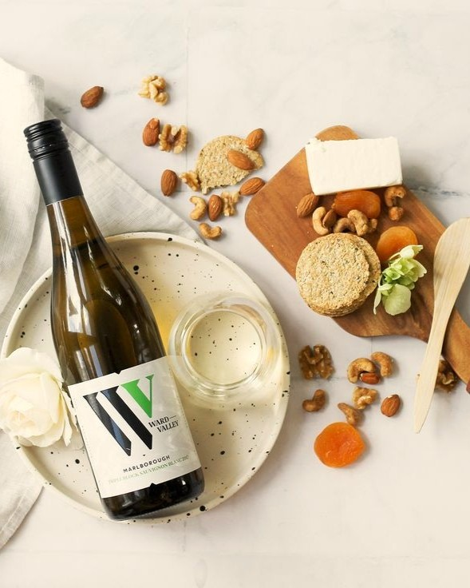

Perfekte vinparringer for en

Hvidvin til fisk og skaldyr
Vores hvidvine komplimenterer
fisk og skaldyr på en enestående
måde.

Hvidvin til fjerkræ og svinekød
Find den perfekte vin til dit fjerkræ
eller svinekød for en lækker
middag.

Hvidvin til ost og dessert
Vores hvidvine er ideelle til at
afslutte måltidet med ost eller
dessert.
Vinparringer til fisk
og skaldyr
Havblink Hvidvin er den ideelle ledsager til grillet fisk og skaldyr.
Den friske syre og frugtagtige noter fremhæver smagen
af havets delikatesser.
Grillet Fisk
Nyd en perfekt balance
mellem vinens friskhed og
fiskens saftighed.
Elegant præsentation
Hver flaske præsenteres
smukt, hvilket gør dem
til ideelle gavevalg.
Hvidvin til fjerkræ
og svinekød
Havblink Hvidvin komplementerer smagen af stegt kylling og and på en enestående måde. Vores hvidvin tilføjer en friskhed, der løfter enhver ret med svinekød.
Smagsoplevelse
Nyd den lette syre
og frugtagtige noter
i vores hvidvin.
Kombinationstips
Server med en
citrusmarinade for at
fremhæve vinens friskhed.

Lækre kombinationer
af hvidvin og dessert
Havblink Hvidvin er ideel til at komplimentere forskellige oste og desserter. Den friske smag løfter oplevelsen til nye højder.
Ostekomfort
Nyd den med skimmelost
for en uforglemmelig
smagsoplevelse.
Sødt valg
Frugttærter og hvidvin
skaber en perfekt
balance af sødme og syre.

FAQs
Her finder du svar på ofte stillede spørgsmål om mad og vinkombinationer.
Hvordan vælger jeg vin?

Når du vælger vin, bør du overveje retten, dens smag og tekstur. Generelt
passer lettere vine til lettere retter, mens kraftigere vine komplementerer
mere fyldige måltider. Det er også vigtigt at tage hensyn til personlig smag.
Hvilken vin til fisk?
Til fiskeretter anbefales det at vælge hvidvin, da den ofte fremhæver fiskens
delikate smag. En frisk Sauvignon Blanc eller en fyldigere Chardonnay kan
være gode valg. Undgå tunge hvidvine, da de kan overdøve retten.
Vin til fjerkræ?
Fjerkræ som kylling eller kalkun går godt med både hvid- og rødvine. En let
Pinot Noir eller en aromatisk Havblink Hvid kan være ideelle. Det afhænger af
tilberedningen og saucen.
Hvilken vin til svinekød?
Svinekød kan parres med både hvid- og rødvine, afhængigt af tilberedningen. En
frugtagtig Zinfandel eller en fyldig hvidvin som Viognier kan være fremragende
valg. Sørg for at matche vinens sødme med retten.